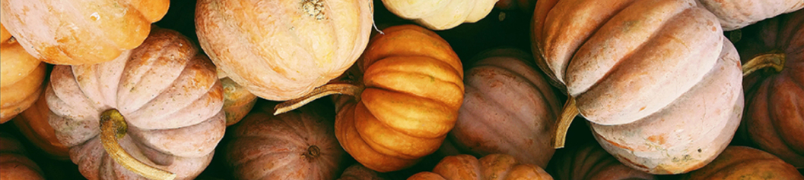

Пшениця – найважливіша продовольча культура України. Урожайність та якість зерна озимих зернових культур залежать від забезпечення рослин елементами живлення протягом всього періоду вегетації.
Мінеральне живлення рослин


зернові
кукурудза
Кукурудза є однією з найвибагливіших рослин до родючості ґрунтів та їх забезпеченості доступними поживними речовинами, тому їй потрібні значно вищі норми добрив, ніж іншим зерновим культурам. Протягом всього вегетаційного періоду кукурудза утворює велику кількість основної та побічної продукції, тому вона споживає значні обсяги протягом всієї вегетації.
соняшник
Соняшник є однією з головних олійних культур, яку вирощують на території України.
Для отримання хороших сходів цієї культури необхідно правильно обробляти ґрунт, щоб в ньому максимально зберегти вологу. В порівнянні з зерновими культурами, у соняшника період засвоєння поживних елементів (особливо калію) досить розтягнутий, тому він потребує значної дози добрив.
овочеві
Картопля має неглибоку і не сильно розвинену кореневу систему. Це обмежує її здатність споживати елементи живлення із значних об’ємів ґрунту та одночасно вирізняється підвищеними вимогами до поживних елементів, необхідних для отримання високого врожаю. Тому картопля потребує значного забезпечення достатньою кількістю поживних речовин.
зернові
Пшениця – найважливіша продовольча культура України. Урожайність та якість зерна озимих зернових культур залежать від забезпечення рослин елементами живлення протягом всього періоду вегетації.
кукурудза
Кукурудза є однією з найвибагливіших рослин до родючості ґрунтів та їх забезпеченості доступними поживними речовинами, тому їй потрібні значно вищі норми добрив, ніж іншим зерновим культурам. Протягом всього вегетаційного періоду кукурудза утворює велику кількість основної та побічної продукції, тому вона споживає значні обсяги протягом всієї вегетації.
Цікавлять умови співпраці
Партнери — це наші клієнти та постачальники, про яких ми піклуємось і які визначають наш шлях.